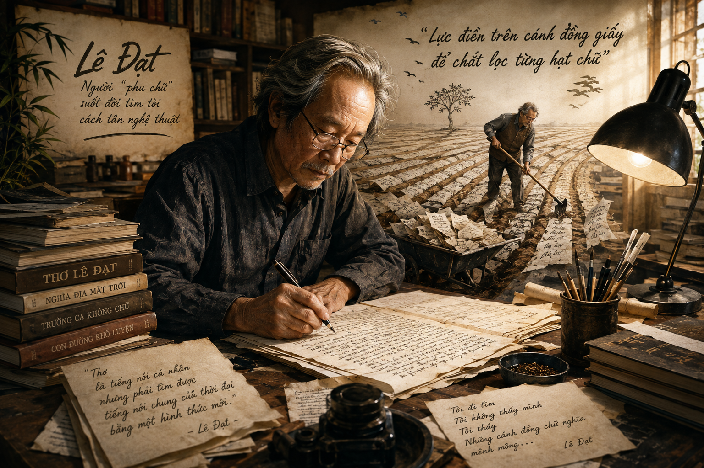

CHỮ BẦU LÊN NHÀ THƠ
(Trích - Lê Đạt)
💬 Lời dẫn nhập / Chuẩn bị đọc:
- Trong hình dung của bạn, nhà thơ phải là người thế nào? Bạn có cho rằng việc làm thơ gắn liền với những phút cao hứng, "bốc đồng"?
- Bạn nhớ hoặc thích định nghĩa nào về thơ, nhà thơ hay công việc làm thơ?
📌 Lưu ý
Quan điểm cốt lõi của tác giả Lê Đạt: "Chữ bầu lên nhà thơ". Thơ ca không phải là sản phẩm của những phút bốc đồng hay năng khiếu thiên phú sẵn có, mà là kết quả của quá trình lao động nghệ thuật kiên trì, lầm lũi và cúc cung tận tụy với ngôn từ.
I GIỚI THIỆU CHUNG
1 Tác giả Lê Đạt
• Lê Đạt (1929 – 2008), tên khai sinh là Đào Công Đạt, quê ở tỉnh Bắc Giang.
• Ông là một nhà thơ luôn có ý thức tìm tòi, đổi mới, cách tân thơ ca và tự nhận mình là một "phu chữ" (người lao động chữ nghĩa).
• Năm 2006, ông được tặng Giải thưởng Nhà nước về Văn học nghệ thuật.
2 Tác phẩm & Thể loại Tiểu luận
• Xuất xứ: Bài tiểu luận in lần đầu trên báo Văn nghệ (1994), sau đó được đưa vào tập Đối thoại với đời & thơ (2011).
• Thể loại: Tiểu luận văn học (nghị luận về bản chất thơ ca và con đường sáng tạo nghệ thuật).

Hình 1: Nhà thơ Lê Đạt – Người "phu chữ" suốt đời tìm tòi cách tân nghệ thuật
II NỘI DUNG BÀI HỌC VÀ LẬP LUẬN
1 Quan niệm về chữ và ngôn ngữ thơ ca
Mô hình phân biệt Thơ và Văn xuôi:
\( \text{Văn xuôi} \rightarrow \text{"Ý tại ngôn tại"} \)
\( \text{Thơ ca} \rightarrow \text{"Ý tại ngôn ngoại"} \ (\text{Đa nghĩa, gợi cảm}) \)
- Thơ làm bằng CHỮ, nhưng không ở "nghĩa tiêu dùng" hay "nghĩa tự vị" (nghĩa từ điển).
- Chữ trong thơ nằm ở diện mạo, âm lượng, độ vang vọng và sức gợi cảm.
- Chữ trong thơ có "hóa trị" đặc biệt – khả năng liên kết và gợi liên tưởng phong phú.
2 Phản bác quan niệm "bốc đồng" & Tôn vinh "Lao động chữ nghĩa"
Phản bác quan niệm sai lầm:
Tác giả ghét định kiến cho rằng thơ chỉ là những phút bốc đồng, năng khiếu thiên phú, "trời cho". Vì những cơn bốc đồng thường ngắn ngủi, "trời cho thì trời lại lấy đi".
Tôn vinh nhà thơ chân chính:
Lê Đạt ưa những nhà thơ "một nắng hai sương, lầm lũi, lực điền trên cánh đồng giấy, đổi bát mồ hôi lấy từng hạt chữ".
3 Quy luật "Chữ bầu lên nhà thơ" và trách nhiệm sáng tạo
Định luật ứng cử thơ ca:
"Không có chức nhà thơ suốt đời. Mỗi lần làm một bài thơ, nhà thơ lại phải ứng cử trong một cuộc bầu khắc nghiệt của cử tri chữ."
\( \text{Nội lực của chữ} \rightarrow \text{Mức độ trẻ/già của nhà thơ} \)
Nhà thơ phải biến ngôn ngữ công cộng thành ngôn ngữ đặc sản độc nhất, làm phong phú cho tiếng mẹ đẻ như một lão bộc trung thành.

Hình 2: Lao động miệt mài "lực điền trên cánh đồng giấy" để chắt lọc từng hạt chữ
III HƯỚNG DẪN TRẢ LỜI CÂU HỎI TRONG BÀI
Câu 1: Vấn đề chính được bàn luận trong văn bản này là gì?
Vấn đề chính của văn bản là mối quan hệ giữa chữ nghĩa và nhà thơ, bản chất của lao động sáng tạo thơ ca: Thơ là sự gia công chữ nghĩa kiên trì, chính chữ nghĩa bầu chọn nên danh xưng và vị thế của nhà thơ chứ không phải nhờ năng khiếu hay cảm hứng bốc đồng.
Câu 2: Hãy tìm trong văn bản một câu có thể nêu bật được ý cốt lõi trong quan niệm về thơ của tác giả.
Câu nêu bật ý cốt lõi: "Không có chức nhà thơ suốt đời. Mỗi lần làm một bài thơ, nhà thơ lại phải ứng cử trong một cuộc bầu khắc nghiệt của cử tri chữ." (hoặc câu nhan đề: "Chữ bầu lên nhà thơ").
Câu 3: Ở phần 2, tác giả đã tranh luận với hai quan niệm phổ biến nào?
1. Quan niệm 1: Thơ gắn liền với những phút cao hứng bốc đồng, làm thơ không cần nỗ lực cố gắng.
2. Quan niệm 2: Thơ là vấn đề của năng khiếu đặc biệt (thiên phú), xa lạ với lao động lầm lũi và nỗ lực trau dồi học vấn.
Tác giả dùng lý lẽ sắc bén và dẫn chứng thực tế (Trời cho thì trời lại lấy đi; Các nhà thơ lớn như Lý Bạch, Goethe, Tagore dù tóc bạc vẫn gặt hái mùa thơ dậy thì nhờ nội lực của chữ) để bác bỏ hai quan niệm sai lầm này.
Câu 4: Tác giả không trực tiếp định nghĩa khái niệm "chữ". Dựa vào "ý tại ngôn ngoại", hãy thử định nghĩa khái niệm này.
"Chữ" trong quan niệm của Lê Đạt không chỉ là vỏ âm thanh hay từ ngữ nằm yên trong từ điển (nghĩa tự vị/nghĩa tiêu dùng). "Chữ" trong thơ là chữ được tổ chức, nhào nặn qua lao động nghệ thuật, mang diện mạo, âm lượng, sức gợi cảm, độ vang vọng và khả năng liên tưởng đa dạng ("hóa trị") trong chỉnh thể tác phẩm.
❓ Mục hỏi đáp (?): "Nghĩa tiêu dùng" và "nghĩa tự vị" khác gì với "diện mạo, âm lượng, sức gợi cảm" của chữ?
- Nghĩa tiêu dùng / nghĩa tự vị: Nghĩa cố định, đơn nghĩa, mang tính thông tin thực dụng trao đổi hằng ngày.
- Diện mạo, âm lượng, sức gợi cảm: Tầng nghĩa nghệ thuật, thẩm mỹ, gợi lên âm thanh, hình ảnh, cảm xúc và các liên tưởng sâu xa khi chữ đứng trong tương quan bài thơ.
🖐️ Hoạt động nêu vấn đề: Thảo luận về câu nói của Picasso được Lê Đạt dẫn lại: "Người ta cần rất nhiều thời gian để trở nên trẻ".
1. Lời nói nghịch lý nhưng sâu sắc: "Trẻ" ở đây không phải độ tuổi sinh học mà là sự tươi mới, sức sống và sự độc đáo trong sáng tạo.
2. Để duy trì được sự "trẻ" trong nghệ thuật, nhà thơ phải mất rất nhiều thời gian rèn luyện, trải nghiệm và tích lũy "nội lực của chữ".
3. Bài học: Sự đổi mới và sức sống nghệ thuật bền vững đòi hỏi quá trình lao động bền bỉ chứ không thể bốc đồng chốc chốc.
💡 em có biết
Nhà thơ Lê Đạt tự nhận mình là một "phu chữ". Ông từng dành nhiều tuần, thậm chí nhiều tháng chỉ để đắn đo chọn lựa một từ hay sắp xếp một trật tự câu thơ. Quan niệm của ông chịu ảnh hưởng sâu sắc bởi trường phái hình thức và tượng trưng thế giới, tiêu biểu như Valéry hay Jabès.
✍️ em có thể
Kết nối đọc - viết: Viết một đoạn văn (khoảng 150 chữ) nêu suy nghĩ của bạn về một nhận định mà bạn thấy tâm đắc nhất trong văn bản "Chữ bầu lên nhà thơ" của Lê Đạt.
🏆 GAMESHOW: AI LÀ TRIỆU PHÚ
10 Câu hỏi trắc nghiệmIV BÀI TẬP TỰ LUẬN RÈN LUYỆN
Bài tập 1: Phân tích mô hình logic công thức sáng tạo thơ ca theo quan điểm Lê Đạt: \( \text{Sáng tạo thơ} = f(\text{Mồ hôi}, \text{Cúc cung tận tụy}, \text{Nội lực của chữ}) \) và so sánh với quan niệm bốc đồng ngẫu nhiên.
Lời giải chi tiết:
1. Biểu thức bốc đồng: Thơ bốc đồng xem \( \text{Tác phẩm} = \text{Cảm hứng chốc lát} \). Mô hình này thụ động, nguy cơ cạn kệt nhanh chóng vì "trời cho thì trời lại lấy đi".
2. Biểu thức Lê Đạt: Thơ chân chính xem \( \text{Tác phẩm} = \int (\text{Lao động chữ}) \, dt \). Trong đó, biến số quyết định là thời gian tích tụ "nội lực của chữ" qua quá trình kiên trì đầm đuối.
Kết luận: Lao động chữ nghĩa biến ngôn ngữ công cộng thành nét độc đáo cá thể, tạo nên sức sống lâu bền cho tác phẩm nghệ thuật.
Bài tập 2: Đánh giá mối quan hệ giữa "nghĩa tự vị" (nghĩa từ điển) và "hóa trị của chữ" trong một câu thơ cụ thể để thấy được sức sáng tạo ngôn từ.
Lời giải chi tiết:
• Nghĩa tự vị \( (N_0) \): Là nghĩa gốc trong từ điển, cố định và đơn nghĩa.
• Hóa trị của chữ \( (H) \): Khả năng kết nối, tạo sóng âm hưởng và đa nghĩa khi chữ va chạm với các chữ khác trong bài thơ.
• Ví dụ: Trong câu thơ Lê Đạt: "Thu bơ vơ sông Đáy chảy đôi dòng", từ "bơ vơ" không còn đơn thuần chỉ trạng thái tâm lý con người mà chuyển sang mở rộng hóa trị không gian, tạo độ vang vọng cho bức tranh mùa thu và dòng sông.
Bài tập 3: Phân tích thông điệp: "Mỗi lần làm một bài thơ, nhà thơ lại phải ứng cử trong một cuộc bầu khắc nghiệt của cử tri chữ."
Lời giải chi tiết:
• Hình ảnh ẩn dụ: "Cử tri chữ" tượng trưng cho sự thẩm định khắt khe của ngôn ngữ nghệ thuật và công chúng yêu thơ.
• Ý nghĩa: Không có thành tựu nào là vĩnh viễn nếu nhà thơ dừng lại không lao động. Danh xưng nhà thơ phải được thử thách và khẳng định lại trong từng bài thơ mới.
• Bài học: Sáng tạo nghệ thuật đòi hỏi thái độ nghiêm túc, khiêm tốn và tinh thần trách nhiệm cao độ đối với từng nét chữ.